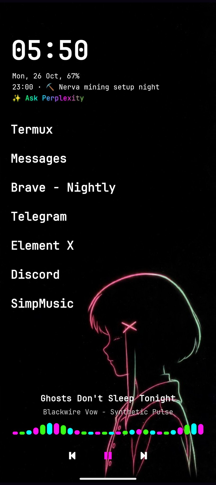
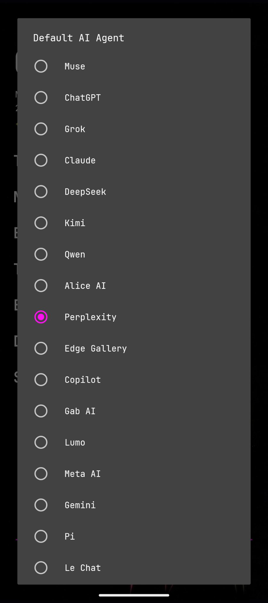
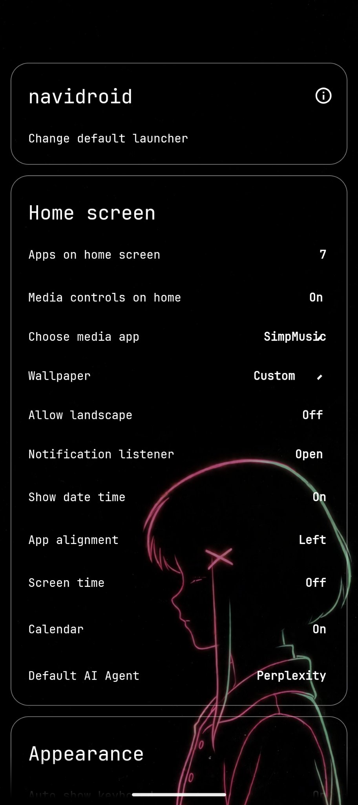

NAVI // NAVIDROID
The mobile story is as important as the desktop story. navidroid is the phone companion to navi — a minimal, distractionless launcher that carries the same clean-first, character-second spirit: your wallpaper, your clock, your apps, and nothing else in the way.
It runs on any Android device — no custom ROM, no flashing, no new hardware. Two minutes to try the navi vision on the phone you already own. A hard fork of Slauncher (itself a fork of Olauncher), rebuilt for navi: the nightshadeNeon skin, a calendar line that counts down, and a Default AI Agent one press away on the home screen.

SHIPPED · 0.2.1
No icon grid, no start-menu archaeology, no clutter. What's on screen earned its pixels.
SHIPPED · 0.2.0 → 0.2.1
Pick a Default AI Agent from a curated list in Settings, and a line under the calendar reads “Ask <name>” and opens it. If the agent isn't installed, the line opens its Play listing instead. Long-press the line to switch agents without opening Settings.
The list holds 19 live agents — Muse, ChatGPT, Grok, Claude, DeepSeek, Kimi, Qwen, Alice AI, Perplexity, Edge Gallery, Copilot, Gab AI, Lumo, Meta AI, Gemini, Pi, Le Chat, PocketPal AI, and Poe. HuggingChat stays hidden: its official app left the Play Store, so the honest route back is a web fallback, not a dead button.
And the line itself is the signature: a ✨ prefix and a slow nightshadeNeon wave — pink → green → cyan — rolling across the words, so it never reads as just another white line.

SHIPPED · 0.2.0
The Default AI Agent lives as a single row in Settings, showing the current pick — no account, no separate app to manage. Settings stay translucent over the wallpaper, so the phone underneath never disappears behind chrome.

PLANNED · NOT SHIPPED
Status note: “shipped” and “planned” describe project state as of 26 October 2026. Planned items are not presented as shipped features. — your phone, the way navi sees it
navidroid 0.2.1 is a public preview — preview builds update over each other. Feedback welcome: the project lives at github.com/xvoidsx/navidroid.